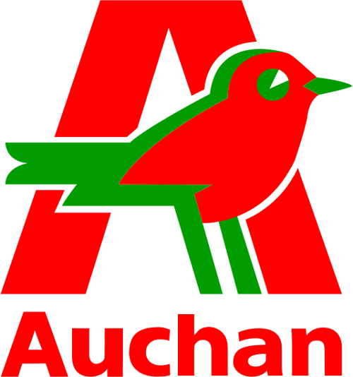

Introduction to the Internet
Michiel Missotten
Introduction to the Internet
WHO AM I ?
Freelance
Doing WEB, Git, Agile, PHP, CI & Java consulting
WOA

WHO ARE YOU ?
What do you know already ?
What do you want to learn ?
WHAT IS THIS ABOUT ?
History
Network
The web
HOW IS THIS GOING TO HAPPEN ?
4 times 3 hours
Short test after 8 hours
Exam
internet != web
History
1960-70 : ARPANET by Defense Advanced Research Projects Agency
1972 : TCP/IP
1980 : Electronic messaging
1986 : IETF
1992 : Internet Society
Network
A group of entities communicating with each other.
RFC : Request for Comments : IETF network - Group of machines - communicating types of network : PAN LAN MAN WAN clients & servers need protocol to communicate Open Systems Interconnection build in layers part of the ISO OSI 7 layers of networking - Layer 1 : physical - Layer 2 : data - Layer 3 : network - Layer 4 : Transport - Layer 5 : Session - Layer 6 : Presentation - Layer 7 : Application Layer 1 : - Optical fiber : color, cable section, number of lines... - Copper : length, type, signal type, - Hertz : frequency, ondulation Tranmission of bits Layer 2 : - Managing errors - Acknowledge - Control Layer 3 : - Go through a network - Source / destination Layer 4 : - Layer 5 : - Session Layer 6 : Layer 7 : - Application layer -